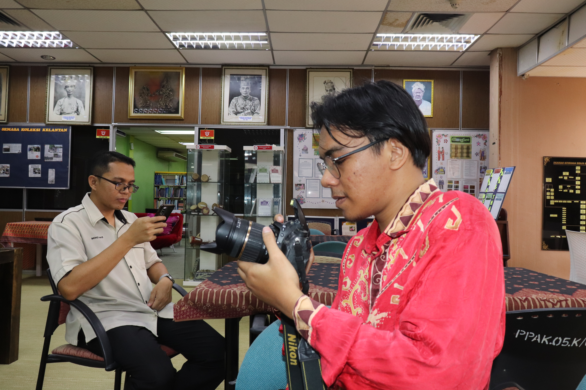
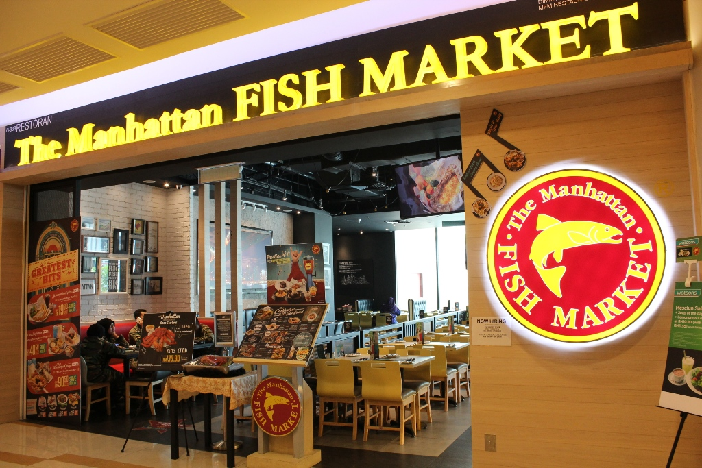

Experience

Junior Web Developer Intern
Library management | Jan 2024 – Jun 2024
- Built and maintained company’s internal web portal.
- Front-end development using HTML, CSS, JavaScript.
- Improved user experience in collaboration with design team.

Kitchen Helper at MFM Restaurant
Part-time Job | Jul 2023 – Dec 2023
SeaFood Food Creation
- Developed a digital library catalog to help students find books easily.
- Used PHP and MySQL to manage book records and user logins.